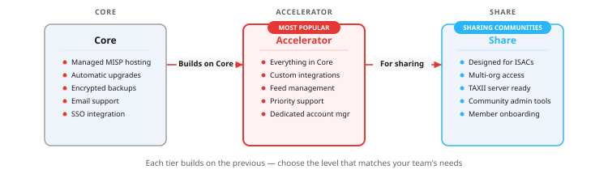
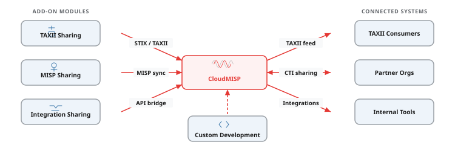

CloudMISP gives your analysts a production-grade MISP instance — fully managed, always current, and ready to connect to the tools and communities you already work with.
Whether you are building your first CTI capability or running a national sharing community, we handle the infrastructure so your team can focus on the intelligence.
CloudMISP is an enterprise-grade managed MISP platform built and operated by Cosive. We handle the infrastructure, upgrades, backups, and monitoring so your analysts can focus on what matters — creating, curating, and sharing threat intelligence.
Whether you are a single team getting started with CTI or a national sharing community connecting dozens of organisations, CloudMISP scales to meet you where you are.

SSO, built-in TAXII server, custom SIEM integrations, and workflow automation that goes beyond what open-source MISP offers out of the box.
Deploy in the AWS region that meets your data residency requirements — including EU Sovereign Cloud for organisations with strict data localisation mandates.
Self-healing architecture with watchdog services that detect and recover from failures automatically. Your analysts should not notice infrastructure issues — and they will not.
Every MISP upgrade goes through code review, unit tests, system tests, synthetic user testing, and manual QA before it reaches your instance. We catch problems so you do not have to.
Blue/green deployments mean upgrades typically cause less than four seconds of disruption. No extended outage windows, no weekend maintenance emails.
Encrypted, cross-region backups ensure your data survives even regional infrastructure failures. Recovery is tested regularly — not just documented.
MISP gives your analysts a single view across every feed, every source, and every sharing community your organisation participates in. Events, attributes, and correlations surface together so your team can spot patterns, prioritise what matters, and move from alert to action without switching tools.
CloudMISP's Insight UI is purpose-built for this workflow — designed to make threat intelligence operational, not just stored.

We trialled self-hosting MISP for six months. Within a week of migrating to CloudMISP we had more feeds connected, better uptime, and our analysts actually started using it daily.
The Cosive team understands the operational reality of running a CTI programme. CloudMISP is not just hosting — it is a genuine partnership that has accelerated our sharing capability.
We needed a platform our sector partners could trust. CloudMISP gave us enterprise-grade infrastructure and Cosive handled the onboarding for every member organisation.
Every CloudMISP instance runs on dedicated infrastructure with automatic upgrades, encrypted cross-region backups, enterprise SSO, and 24/7 monitoring. The tiers differ in the level of customisation, integration support, and sharing features you need.

Each add-on connects directly to your CloudMISP instance to extend its capabilities. Mix and match based on your sharing, integration, and compliance requirements.

Threat intelligence is only valuable when it reaches the systems that can act on it. CloudMISP integrates with your SIEM, SOAR, EDR, firewalls, and ticketing platforms — pushing IOCs, alerts, and context where your analysts and automated playbooks need them. Every integration is built to enterprise standards — authenticated, encrypted in transit, and designed for reliability at scale.
With CloudMISP Accelerator, our engineers build and maintain these integrations for you, so your team stays focused on analysis rather than plumbing.
How we help you consume CTI
A large resource company with operations across Australia, South America, and West Africa needed to consolidate fragmented threat intelligence workflows. Each regional team had its own ad-hoc processes, different feeds, and no shared view of threats affecting the wider organisation.
Cosive deployed CloudMISP Accelerator instances in each region, connected them with synchronised sharing, and integrated the output into their global Microsoft Sentinel deployment. Within six months, over 40 analysts were using the platform daily.


Effective sharing means more than setting up a server. It requires trust, clear governance, and enterprise-grade infrastructure that makes participation easy for every member — regardless of their technical maturity.
CloudMISP Share gives community operators the tools to manage members, control access, and offer multiple sharing models (push, pull, and direct login) so partners can participate in the way that works for them.
Start a sharing communityA central bank in the Middle East wanted to establish a national financial-sector sharing community. Member institutions ranged from large commercial banks with mature SOCs to smaller organisations with no dedicated security staff.
Cosive deployed CloudMISP Accelerator as the central hub with the TAXII Sharing Server add-on, enabling automated feed distribution to members who could consume STIX/TAXII, while others accessed the platform directly through a web interface. The community grew from a pilot with three banks to over twelve connected institutions within a year.


MISP (Malware Information Sharing Platform) is an open-source threat intelligence platform used by security teams worldwide. It helps organisations collect, store, share, and correlate indicators of compromise (IOCs) and other threat data. MISP is maintained by an active global community and is used by national CERTs, ISACs, and private-sector security teams alike.
CloudMISP is built on MISP, but it is not just MISP on a server. We add managed infrastructure, automatic upgrades with comprehensive testing, SSO integration, encrypted backups, self-healing architecture, and enterprise features like TAXII serving and custom SIEM integrations. You get an enterprise-grade platform — with the reliability, security, and compliance posture your organisation expects — without needing a team to build and maintain the infrastructure around it.
Yes. Cosive actively contributes to the MISP open-source project. We submit bug fixes, feature enhancements, and documentation improvements. We also participate in the MISP community through conferences, working groups, and community discussions. Our experience operating MISP at scale directly informs the contributions we make upstream.
MISP excels at collecting and correlating indicators of compromise, managing threat intelligence feeds, sharing intelligence with trusted partners, and distributing IOCs to security tools like SIEMs and firewalls. It is particularly strong for teams that need to collaborate — whether internally across departments or externally across organisations and sectors.
MISP is not a SIEM, a SOAR, or an endpoint detection tool. It does not replace your security monitoring stack — it complements it. If you need real-time alerting, automated response playbooks, or endpoint visibility, those are separate tools that MISP integrates with. MISP is best thought of as the connective tissue that makes your other security tools more effective.
CloudMISP is a commercial managed service, so we do not offer free instances. However, MISP itself is free and open-source — you can download and run it yourself. If you are a researcher affiliated with a university or research institution, get in touch and we will see what we can do. We are always happy to support the security research community where we can.
You absolutely could — and some organisations do. The question is whether that is the best use of your team's time. Running MISP at enterprise scale means handling upgrades, monitoring, encrypted backups, SSO integration, high availability, compliance, and scaling — on top of the analyst workflow that MISP is actually for. CloudMISP lets your team focus on threat intelligence work instead of infrastructure maintenance. For most teams, that trade-off makes sense.

Tell us about your team and what you are trying to achieve. We will get back to you within one business day.